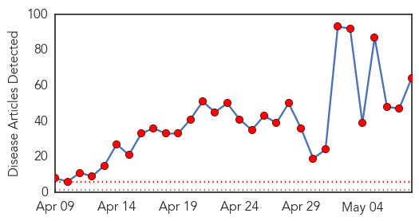
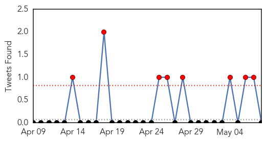
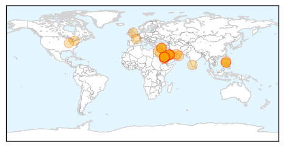
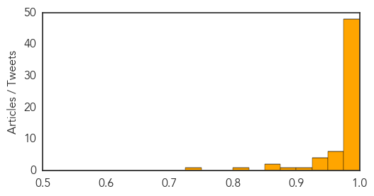

Toggle navigation
Early Warning
Daily Alerts
Middle East Respiratory Syndrome
May 08, 2014
Compare to:
-
Dengue Fever
Hemmorhagic Fever
Mold/Fungal Infection
Influenza
Meningitis
Pertussis / Whooping Cough
Cholera
Hepatitis
Chikungunya
Yellow Fever
Bubonic Plague
West Nile Virus
Swine Flu
Ebola
Measles
Unknown
Mumps
30 Day Trends
Web: 30
alerts
, 0
warnings
Twitter: 8
alerts
, 0
warnings
Top Articles:
Showing top 50 articles...
1.000
Saudi Arabia reports 5 more deaths from MERS
1.000
Saudi Arabia records 5 more deaths from MERS coronavirus as confirmed infection numbers grow
1.000
Saudi Arabia reports 5 more MERS deaths
1.000
The Voice of Russia: News, Breaking news, Politics, Economics, Business, Russia, International current events, Expert opinion, podcasts, Video
1.000
Saudia Arabia reports four new deaths from MERS virus
1.000
Saudi Arabia reports 5 more deaths from MERS
1.000
Middle East Virus Pandemic May Not Be Big Mississippi Threat
0.999
Saudi Arabia reports 5 more deaths from MERS
0.999
Gulf Daily News World News Virus kills five in Saudi Arabia
0.999
Lebanon has first MERS case; Saudis report 14 more
0.999
Saudi Arabia reports 5 more deaths from MERS
0.999
UAE tightens scrutiny of camel shipments from GCC
0.998
Saudi Arabia reports five more deaths from MERS
0.998
Saudi Arabia: King Fahd Hospital chief removed as WHO finishes MERS visit
0.998
No MERS Cases in Lebanon, Measures are Sufficient — Naharnet
0.998
MERS toll rises with new Saudi Arabia deaths
0.998
MERS in Saudi Arabia: Rising casualties put Kerala on guard
0.998
Saudia Arabia Identifies 18 New Cases
0.998
Saudia Arabia Identifies 18 New Cases
0.998
Surge in MERS cases mainly an infection control problem: WHO - National
0.997
Saudi Arabia finds another 32 MERS cases as disease spreads
0.997
Saudi Arabia finds another 18 MERS cases as disease spreads
0.997
Killer virus strikes as cases pile up
0.997
Saudi Arabia finds another 32 MERS cases as disease spreads
0.997
Saudi Arabia finds another 32 MERS cases as disease spreads
0.996
4 new MERS deaths, 18 more infections in Saudi
0.996
Saudi- Antibodies found to 'MERS' virus - Toll hits 105
0.996
No Haj travel curbs over Mers: World Health Organisation
0.996
Saudi Arabia Identifies 32 New MERS Cases
0.996
18 more cases of Mers found in Saudi Arabia
0.996
Saudi Arabia finds another 32 MERS cases as disease spreads
0.995
Saudi Arabia finds another 32 MERS cases as disease spreads
0.995
MERS increase infection control issue
0.995
MERS kills four more in Saudi Arabia
0.995
Four new deaths from MERS virus in Saudi Arabia
0.994
REFILE-UPDATE 1-Saudi Arabia finds another 32 MERS cases as disease spreads
0.993
Saudi Arabia Reports 18 New Cases of MERS Virus
0.993
4 new MERS deaths, 18 more infections in Saudi
0.991
Saudi Arabia finds another 32 MERS cases as disease spreads
0.991
4 new MERS deaths, 18 more infections in Saudi
0.991
MERS Watch: No Easing of Outbreak
0.987
Saudi Arabia Reports 4 New MERS Deaths, 18 New Cases
0.986
Saudi hospital head sacked over MERS panic
0.985
United States Embassy in Oman travel advisory on MERS
0.982
Fakeih vows all-out efforts to contain deadly coronavirusHealthcare
0.979
No specific 'camel MERS-CoV strain,' but one virus infects camels and humans
0.978
First case of MERS reported in Lebanon - health ministry
0.977
MERS-stricken hospital gets new managers; death toll now at 117Healthcare
0.973
Middle East virus makes its way to the U. S.
0.969
First MERS case detected in Lebanon: Health Ministry
Top Tweets:
No tweets found for May 08, 2014
Web/News Articles

Tweets

Article Locations

Article Confidences
